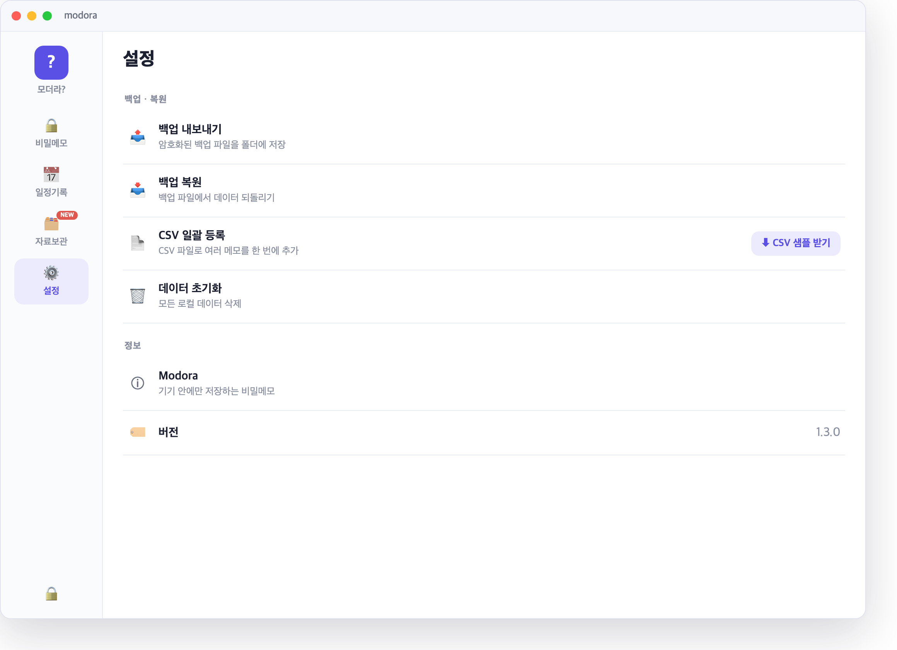
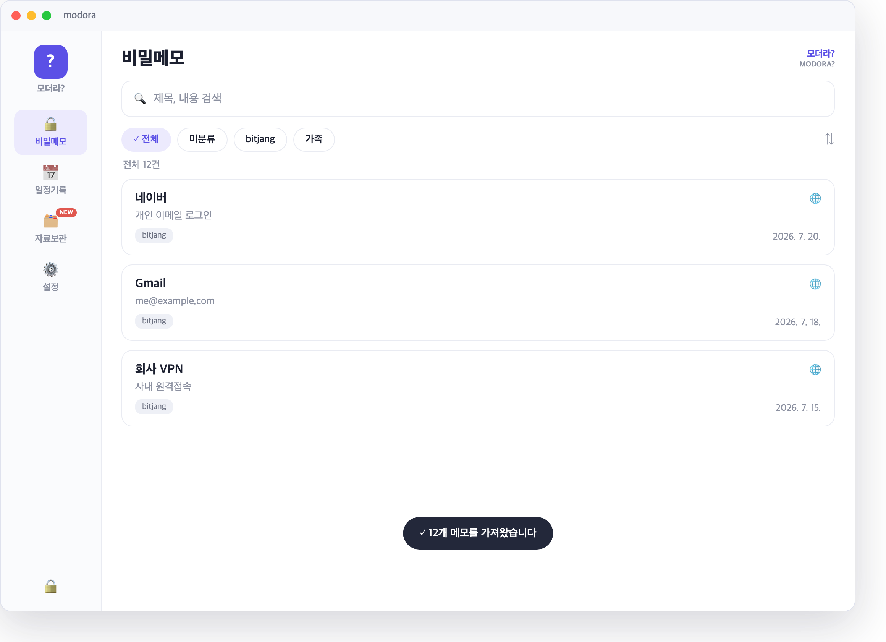
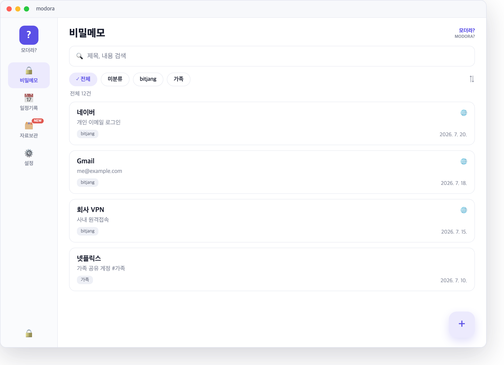
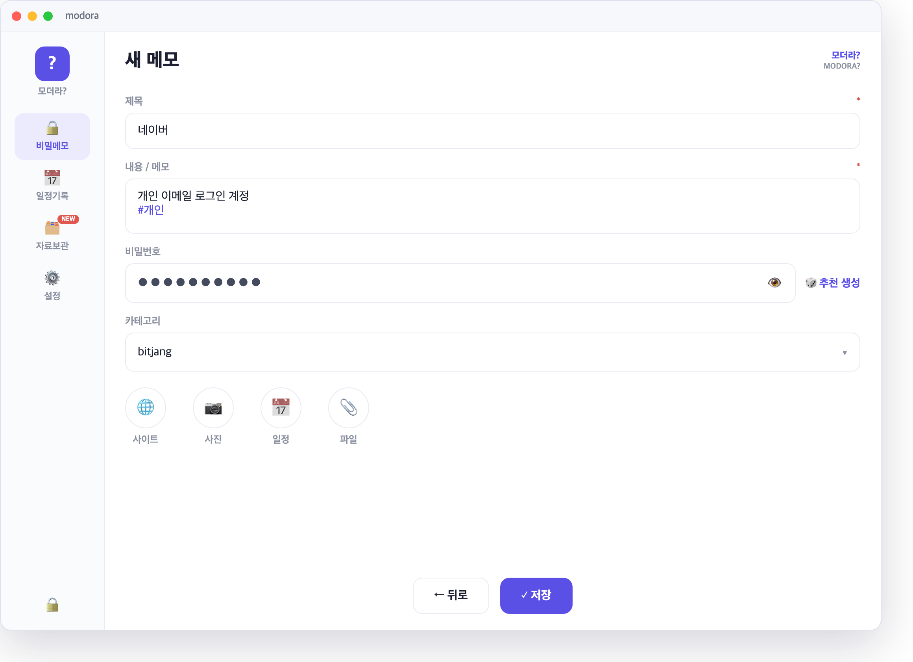
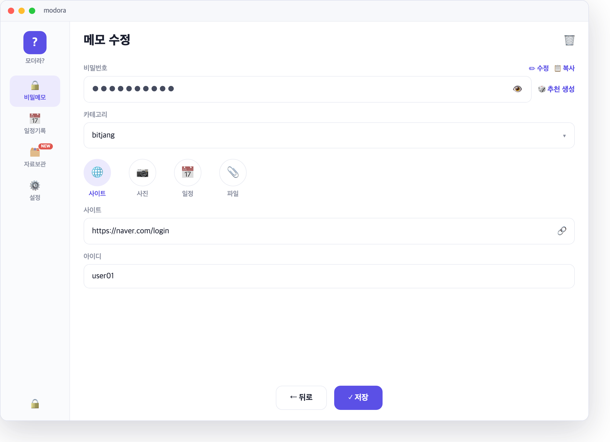
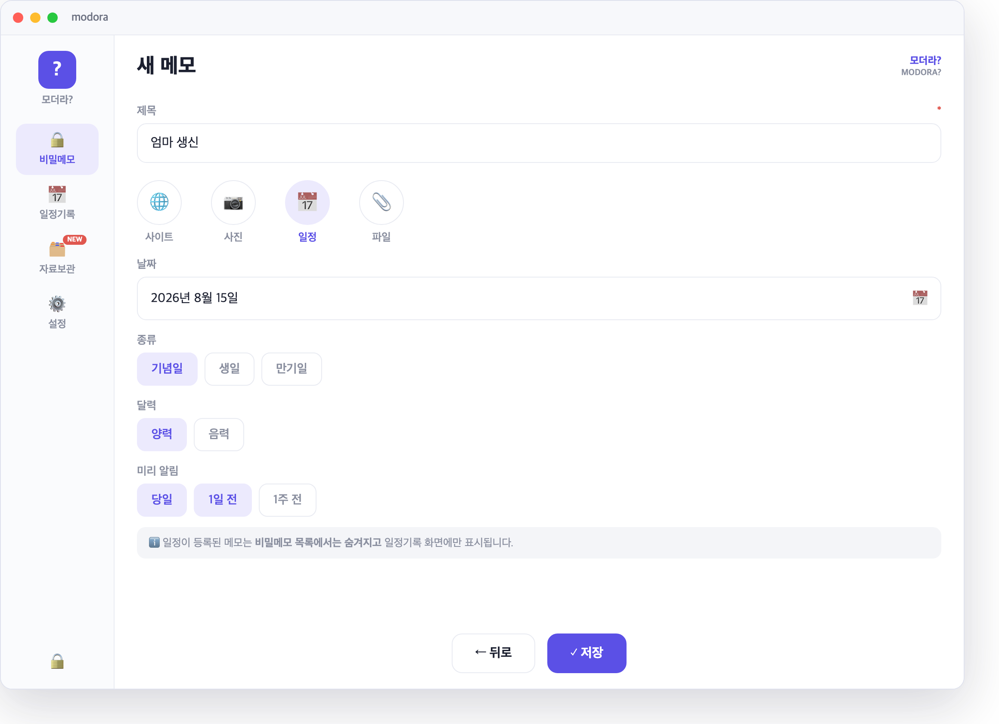

파일은 UTF-8로 저장하세요(엑셀은 "CSV UTF-8"). 날짜·연도·종류·양력/음력 열은 비워도 됩니다.
2.2 샘플 내려받기
설정 탭 → CSV 일괄 등록 항목에서 CSV 샘플 받기를 눌러 예시 파일을 내려받고, 그 형식에 맞춰 데이터를 채웁니다.

설정 → CSV 샘플 받기
2.3 파일 선택 & 가져오기
CSV 일괄 등록을 눌러 준비한 파일을 선택하면, 가져오기가 끝난 뒤 추가된 개수가 표시되고 항목이 목록에 나타납니다.

가져오기 결과
3. 메모 작성
메모·일정·사이트·아이디·비밀번호는 한 화면에서 함께 입력합니다.
3.1 새 메모
비밀메모 목록에서 오른쪽 아래 ＋ 버튼을 눌러 새 메모를 시작합니다.

비밀메모 목록 + 등록(＋)
3.2 제목·내용
제목과 내용을 입력합니다(둘 다 필수). 내용에 #태그를 적으면 나중에 검색·분류에 쓸 수 있습니다.

메모 편집 (제목·내용)
3.3 사이트·아이디·비밀번호
하단 사이트 아이콘을 눌러 패널을 엽니다.
사이트(URL), 아이디, 비밀번호를 입력합니다.
비밀번호는 🎲 추천 생성으로 강력하게 만들 수 있고, 저장 후엔 마스킹되며 복사 버튼으로 복사합니다.
저장하면 URL 칸 오른쪽 🔗 버튼으로 기본 브라우저에서 사이트를 바로 열 수 있습니다.

사이트·아이디·비밀번호 (+🔗 사이트 열기)
3.4 일정 등록
하단 일정 아이콘을 눌러 날짜, 종류(기념일/생일/만기), 양력·음력, 미리 알림을 설정합니다.

일정 등록
ℹ️ 일정이 등록된 메모는 비밀메모 목록에서는 숨겨지고 일정기록 화면에만 표시됩니다. 편집하려면 일정기록에서 해당 항목을 여세요.
안전하게 쓰기
마스터 비밀번호는 복구가 불가능합니다 — 반드시 따로 안전하게 보관하세요.
자동 잠금: 일정 시간 미사용 시 자동으로 잠깁니다(설정에서 조절).
백업: 설정 → 백업 내보내기로 암호화 백업 파일을 만들어 두면 기기 교체·재설치 시 복원할 수 있습니다.
모든 데이터는 이 기기 안에만 있습니다 — 분실·초기화에 대비해 백업을 권장합니다.
Modora Desktop User Guide
Version 1.3.0 · 2026-07
Modora keeps your sites, IDs, passwords, memos and schedules encrypted on your own device only (Argon2id · AES-256-GCM). Nothing is ever sent to a server.
⚠️ If you forget your master password, your data cannot be recovered. Keep it somewhere safe.
Windows: run ModoraSetup.exe — the setup wizard will guide you. If SmartScreen appears, choose More info → Run anyway.
macOS: open Modora.dmg and drag Modora into the Applications folder.
Download page
1.2 Set Your Master Password
On first launch, a screen for creating your master password appears.
Type the master password you want to use, then type it once more in the field below to confirm.
(Optional) Add a hint to jog your memory — never put the password itself in the hint.
Click Start to create your vault.
Passwords use Latin letters, digits and symbols — check your keyboard's input language while typing.
Set your master password
1.3 Unlock
From then on, unlock the app with your master password when you open it. Use the 👁 icon to reveal what you typed, and if you can't remember the password, click Show hint.
Unlock
2. Bulk Import Memos (CSV)
If you already keep a list of accounts and memos, you can register them all at once from a CSV file.
2.1 CSV Format
Row 1 is the header; data starts on row 2. Column order:
Save the file as UTF-8 (in Excel choose "CSV UTF-8"). The date/year/kind/calendar columns are optional.
2.2 Download the Sample
Go to the Settings tab → Bulk import (CSV) section and click Download CSV sample to get the example file, then fill in your data using that format.
Settings → Download CSV sample
2.3 Pick a File & Import
Click Bulk import (CSV) and pick your prepared file; when the import finishes, the number of added items is shown and they appear in your list.
Import result
3. Creating Memos
Memos, schedules, sites, IDs and passwords are all entered on one screen.
3.1 New Memo
On the Secret memos list, tap the ＋ button (bottom-right) to start a new memo.
Secret memos list + New (＋)
3.2 Title & Note
Enter a title and note (both required). Add #tags in the note to use for search and sorting later.
Editing a memo (title · note)
3.3 Site, ID & Password
Tap the Site icon at the bottom to open the panel.
Enter the site (URL), login ID and password.
Use 🎲 Suggest to generate a strong password; after saving, the password is masked — use the Copy button to copy it.
After saving, the 🔗 button next to the URL field opens the site directly in your default browser.
Site · Login ID · Password (+🔗 open site)
3.4 Add a Schedule
Tap the Schedules icon at the bottom and set the date, kind (anniversary/birthday/expiry), solar/lunar calendar and reminders.
Adding a schedule
ℹ️ A memo that has a schedule is hidden from the Secret memos list and shown only on the Schedules screen — open it there to edit.
Using It Safely
Your master password can't be recovered — be sure to store it safely somewhere else.
Auto-lock: the app locks automatically after a period of inactivity (adjustable in Settings).
Backup: Settings → Export backup creates an encrypted backup file you can restore after a device change or reinstall.
All data lives only on this device — keep a backup in case of loss or reset.
Hướng dẫn sử dụng Modora trên máy tính
Phiên bản 1.3.0 · 2026-07
Modora là ứng dụng lưu trữ trang web, ID, mật khẩu cùng ghi chú và lịch trình được mã hóa chỉ trên thiết bị của bạn (Argon2id · AES-256-GCM). Dữ liệu không bao giờ được gửi đến bất kỳ máy chủ nào.
⚠️ Nếu quên mật khẩu chính, bạn sẽ không thể khôi phục dữ liệu. Hãy lưu giữ mật khẩu ở nơi an toàn.
Nhấn nút tương ứng với hệ điều hành của bạn để tải tệp cài đặt.
Windows: chạy ModoraSetup.exe — trình hướng dẫn cài đặt sẽ xuất hiện. Nếu SmartScreen cảnh báo, chọn More info → Run anyway (Thông tin thêm → Vẫn chạy).
macOS: mở Modora.dmg và kéo Modora vào thư mục Applications (Ứng dụng).
Trang tải xuống
1.2 Thiết lập mật khẩu chính lần đầu
Khi chạy ứng dụng lần đầu, màn hình tạo mật khẩu chính sẽ xuất hiện.
Nhập mật khẩu chính bạn muốn dùng, sau đó nhập thêm một lần nữa vào ô bên dưới để xác nhận.
(Tùy chọn) Bạn có thể ghi một gợi ý để dễ nhớ. Đừng ghi chính mật khẩu vào phần gợi ý.
Nhấn Bắt đầu để tạo kho lưu trữ.
Mật khẩu dùng chữ Latinh, chữ số và ký hiệu — hãy kiểm tra ngôn ngữ bàn phím khi nhập.
Thiết lập mật khẩu chính lần đầu
1.3 Mở khóa
Từ những lần sau, hãy nhập mật khẩu chính để mở khóa khi mở ứng dụng. Dùng biểu tượng 👁 để xem nội dung đã nhập; nếu không nhớ mật khẩu, nhấn Xem gợi ý.
Mở khóa
2. Nhập hàng loạt ghi chú có sẵn (CSV)
Nếu bạn đã có sẵn danh sách tài khoản và ghi chú, bạn có thể đăng ký tất cả cùng lúc bằng tệp CSV.
2.1 Định dạng CSV
Dòng đầu tiên là hàng tiêu đề; dữ liệu bắt đầu từ dòng thứ hai. Thứ tự cột:
Lưu tệp ở định dạng UTF-8 (trong Excel chọn "CSV UTF-8"). Các cột ngày/năm/loại/dương-âm lịch có thể để trống.
2.2 Tải tệp mẫu
Vào thẻ Cài đặt → mục Nhập hàng loạt CSV, nhấn Tải mẫu CSV để tải tệp ví dụ, rồi điền dữ liệu của bạn theo đúng định dạng đó.
Cài đặt → Tải mẫu CSV
2.3 Chọn tệp & nhập
Nhấn Nhập hàng loạt CSV và chọn tệp đã chuẩn bị; sau khi nhập xong, số mục đã thêm sẽ hiển thị và các mục xuất hiện trong danh sách của bạn.
Kết quả nhập
3. Tạo ghi chú
Ghi chú, lịch trình, trang web, ID và mật khẩu đều được nhập trên cùng một màn hình.
3.1 Ghi chú mới
Trong danh sách Ghi chú bí mật, nhấn nút ＋ ở góc dưới bên phải để bắt đầu ghi chú mới.
Danh sách ghi chú bí mật + tạo mới (＋)
3.2 Tiêu đề · nội dung
Nhập tiêu đề và nội dung (cả hai đều bắt buộc). Thêm #thẻ trong nội dung để dùng cho tìm kiếm và phân loại sau này.
Chỉnh sửa ghi chú (tiêu đề · nội dung)
3.3 Trang web · ID · mật khẩu
Nhấn biểu tượng Trang web ở dưới cùng để mở bảng nhập.
Nhập trang web (URL), ID và mật khẩu.
Có thể tạo mật khẩu mạnh bằng 🎲 Gợi ý; sau khi lưu, mật khẩu được che và bạn dùng nút Sao chép để sao chép.
Sau khi lưu, nút 🔗 bên phải ô URL sẽ mở trang web ngay trong trình duyệt mặc định.
Trang web · ID · mật khẩu (+🔗 mở trang web)
3.4 Đăng ký lịch trình
Nhấn biểu tượng Lịch trình ở dưới cùng để đặt ngày, loại (kỷ niệm/sinh nhật/hết hạn), dương lịch/âm lịch và lời nhắc trước.
Đăng ký lịch trình
ℹ️ Ghi chú đã có lịch trình sẽ bị ẩn khỏi danh sách Ghi chú bí mật và chỉ hiển thị trên màn hình Lịch trình. Để chỉnh sửa, hãy mở mục đó từ màn hình Lịch trình.
Sử dụng an toàn
Mật khẩu chính không thể khôi phục — hãy nhớ lưu giữ riêng ở nơi an toàn.
Tự động khóa: ứng dụng tự khóa sau một thời gian không sử dụng (điều chỉnh trong Cài đặt).
Sao lưu: Cài đặt → Xuất bản sao lưu sẽ tạo tệp sao lưu mã hóa để bạn khôi phục khi đổi thiết bị hoặc cài lại.
Mọi dữ liệu chỉ nằm trên thiết bị này — nên sao lưu để đề phòng mất mát hoặc đặt lại máy.
Guía del usuario de Modora para escritorio
Versión 1.3.0 · 2026-07
Modora es una aplicación que guarda tus sitios, ID, contraseñas, notas y agenda cifrados únicamente en tu dispositivo (Argon2id · AES-256-GCM). Los datos nunca se envían a ningún servidor.
⚠️ Si olvidas tu contraseña maestra, los datos no se pueden recuperar. Guárdala aparte en un lugar seguro.
Pulsa el botón de tu sistema operativo para descargar el instalador.
Windows: ejecuta ModoraSetup.exe — se abrirá el asistente de instalación. Si aparece SmartScreen, elige Más información → Ejecutar de todas formas.
macOS: abre Modora.dmg y arrastra Modora a la carpeta Aplicaciones.
Página de descarga
1.2 Configurar la contraseña maestra
Al abrir la aplicación por primera vez aparece la pantalla para crear la contraseña maestra.
Escribe la contraseña maestra que usarás y escríbela una vez más en el campo inferior para confirmarla.
(Opcional) Puedes añadir una pista para recordarla. Nunca escribas la contraseña misma en la pista.
Pulsa Comenzar para crear tu bóveda.
Las contraseñas usan letras latinas, números y símbolos — comprueba el idioma del teclado al escribir.
Configuración inicial de la contraseña maestra
1.3 Desbloquear
A partir de entonces, desbloquea la aplicación con tu contraseña maestra al abrirla. Con el icono 👁 puedes ver lo que escribiste; si no recuerdas la contraseña, pulsa Ver pista.
Desbloquear
2. Importar notas existentes en bloque (CSV)
Si ya tienes una lista de cuentas y notas, puedes registrarlas todas a la vez con un archivo CSV.
2.1 Formato CSV
La primera fila es el encabezado; los datos empiezan en la segunda fila. Orden de columnas:
Guarda el archivo en UTF-8 (en Excel elige "CSV UTF-8"). Las columnas de fecha/año/tipo/calendario pueden quedar vacías.
2.2 Descargar la plantilla
Ve a la pestaña Ajustes → sección Importación masiva CSV y pulsa Descargar plantilla CSV para obtener el archivo de ejemplo; luego rellena tus datos con ese formato.
Ajustes → Descargar plantilla CSV
2.3 Elegir archivo e importar
Pulsa Importación masiva CSV y elige el archivo preparado; al terminar la importación se muestra el número de elementos añadidos y estos aparecen en tu lista.
Resultado de la importación
3. Crear notas
Las notas, la agenda, los sitios, los ID y las contraseñas se introducen juntos en una sola pantalla.
3.1 Nueva nota
En la lista de Notas secretas, pulsa el botón ＋ (abajo a la derecha) para empezar una nota nueva.
Lista de notas secretas + nueva (＋)
3.2 Título y contenido
Escribe el título y el contenido (ambos obligatorios). Añade #etiquetas en el contenido para buscar y clasificar después.
Edición de una nota (título · contenido)
3.3 Sitio · ID · contraseña
Pulsa el icono Sitio en la parte inferior para abrir el panel.
Introduce el sitio (URL), el ID y la contraseña.
Puedes generar una contraseña fuerte con 🎲 Sugerir; tras guardar, la contraseña queda enmascarada y se copia con el botón Copiar.
Después de guardar, el botón 🔗 a la derecha del campo URL abre el sitio directamente en tu navegador predeterminado.
Sitio · ID · contraseña (+🔗 abrir sitio)
3.4 Añadir a la agenda
Pulsa el icono Agenda en la parte inferior y configura la fecha, el tipo (aniversario/cumpleaños/vencimiento), el calendario solar/lunar y los recordatorios.
Añadir a la agenda
ℹ️ Una nota con fecha de agenda se oculta de la lista de Notas secretas y solo se muestra en la pantalla de Agenda. Para editarla, ábrela desde esa pantalla.
Uso seguro
La contraseña maestra no se puede recuperar — guárdala aparte en un lugar seguro.
Bloqueo automático: la aplicación se bloquea tras un periodo de inactividad (ajustable en Ajustes).
Copia de seguridad: Ajustes → Exportar copia de seguridad crea un archivo cifrado que puedes restaurar al cambiar de dispositivo o reinstalar.
Todos los datos están solo en este dispositivo — se recomienda mantener una copia de seguridad por si se pierde o se restablece.
Руководство пользователя Modora для компьютера
Версия 1.3.0 · 2026-07
Modora — это приложение, которое хранит сайты, логины, пароли, заметки и расписание в зашифрованном виде только на вашем устройстве (Argon2id · AES-256-GCM). Данные никогда не передаются ни на какие серверы.
⚠️ Если вы забудете мастер-пароль, восстановить данные будет невозможно. Храните его отдельно в надёжном месте.
Нажмите кнопку своей операционной системы, чтобы скачать установочный файл.
Windows: запустите ModoraSetup.exe — откроется мастер установки. Если появится предупреждение SmartScreen, выберите Подробнее → Выполнить в любом случае.
macOS: откройте Modora.dmg и перетащите Modora в папку Программы.
Страница загрузки
1.2 Первичная установка мастер-пароля
При первом запуске приложения появится экран создания мастер-пароля.
Введите мастер-пароль, который будете использовать, и повторите его ещё раз в поле ниже для подтверждения.
(Необязательно) Можно добавить подсказку для памяти. Никогда не записывайте сам пароль в подсказку.
Нажмите Начать, чтобы создать хранилище.
Пароль состоит из латинских букв, цифр и символов — проверяйте раскладку клавиатуры при вводе.
Первичная установка мастер-пароля
1.3 Разблокировка
В дальнейшем при открытии приложения вводите мастер-пароль для разблокировки. Значок 👁 показывает введённый текст; если вы не помните пароль, нажмите Показать подсказку.
Разблокировка
2. Массовый импорт заметок (CSV)
Если у вас уже есть список учётных записей и заметок, их можно добавить все сразу из файла CSV.
2.1 Формат CSV
Первая строка — заголовок; данные начинаются со второй строки. Порядок столбцов:
Столбец
Описание
Пример
제목 / title
Заголовок заметки
네이버
내용 / contents
Текст заметки
рабочая учётная запись
비밀번호 / pw
Пароль
pw1234
дата (месяц/день)
Месяц/день расписания (необязательно)
7/17
год / year
Год расписания (необязательно)
2002
тип / kind
день рождения/годовщина/срок действия (необязательно)
Сохраняйте файл в кодировке UTF-8 (в Excel выберите «CSV UTF-8»). Столбцы даты, года, типа и календаря можно оставить пустыми.
2.2 Скачивание образца
Откройте вкладку Настройки → раздел Массовый импорт CSV и нажмите Скачать образец CSV, чтобы получить файл-пример, затем заполните данные по этому формату.
Настройки → Скачать образец CSV
2.3 Выбор файла и импорт
Нажмите Массовый импорт CSV и выберите подготовленный файл; по завершении импорта будет показано число добавленных записей, и они появятся в вашем списке.
Результат импорта
3. Создание заметок
Заметки, расписание, сайты, логины и пароли вводятся вместе на одном экране.
3.1 Новая заметка
В списке Секретные заметки нажмите кнопку ＋ в правом нижнем углу, чтобы создать новую заметку.
Список секретных заметок + создание (＋)
3.2 Заголовок и текст
Введите заголовок и текст (оба обязательны). Добавьте в текст #теги — они пригодятся для поиска и сортировки.
Редактирование заметки (заголовок · текст)
3.3 Сайт · логин · пароль
Нажмите значок Сайт внизу, чтобы открыть панель.
Введите сайт (URL), логин и пароль.
Надёжный пароль можно создать кнопкой 🎲 Предложить; после сохранения пароль маскируется — используйте кнопку Копировать.
После сохранения кнопка 🔗 справа от поля URL открывает сайт прямо в браузере по умолчанию.
Сайт · логин · пароль (+🔗 открыть сайт)
3.4 Добавление в расписание
Нажмите значок Расписание внизу и задайте дату, тип (годовщина/день рождения/срок действия), солнечный или лунный календарь и напоминания.
Добавление в расписание
ℹ️ Заметка с расписанием скрывается из списка секретных заметок и отображается только на экране расписания. Чтобы отредактировать её, откройте запись там.
Безопасное использование
Мастер-пароль восстановить невозможно — обязательно храните его отдельно в надёжном месте.
Автоблокировка: приложение автоматически блокируется после периода бездействия (настраивается в настройках).
Резервная копия: Настройки → Экспорт резервной копии создаёт зашифрованный файл, из которого можно восстановить данные при смене устройства или переустановке.
Все данные находятся только на этом устройстве — рекомендуем делать резервные копии на случай утери или сброса.
Modora डेस्कटॉप उपयोगकर्ता गाइड
संस्करण 1.3.0 · 2026-07
Modora एक ऐसा ऐप है जो आपकी साइटें, ID, पासवर्ड, नोट्स और शेड्यूल केवल आपके डिवाइस पर एन्क्रिप्ट करके (Argon2id · AES-256-GCM) सुरक्षित रखता है। डेटा कभी किसी सर्वर पर नहीं भेजा जाता।
⚠️ यदि आप मास्टर पासवर्ड भूल जाते हैं, तो डेटा पुनर्प्राप्त नहीं किया जा सकता। इसे किसी सुरक्षित स्थान पर अलग से रखें।
फ़ाइल को UTF-8 में सहेजें (Excel में "CSV UTF-8" चुनें)। तिथि, वर्ष, प्रकार और सौर/चंद्र कॉलम खाली छोड़े जा सकते हैं।
2.2 नमूना डाउनलोड करना
सेटिंग्स टैब → CSV एक साथ आयात अनुभाग में CSV नमूना डाउनलोड करें दबाकर उदाहरण फ़ाइल लें और उसी प्रारूप में अपना डेटा भरें।
सेटिंग्स → CSV नमूना डाउनलोड
2.3 फ़ाइल चुनना और आयात
CSV एक साथ आयात दबाकर तैयार की गई फ़ाइल चुनें; आयात पूरा होने पर जोड़े गए आइटम की संख्या दिखाई देती है और वे आपकी सूची में आ जाते हैं।
आयात का परिणाम
3. नोट बनाना
नोट्स, शेड्यूल, साइट, ID और पासवर्ड सब एक ही स्क्रीन पर दर्ज किए जाते हैं।
3.1 नया नोट
गुप्त नोट्स सूची में नीचे दाईं ओर ＋ बटन दबाकर नया नोट शुरू करें।
गुप्त नोट्स सूची + नया (＋)
3.2 शीर्षक · सामग्री
शीर्षक और सामग्री दर्ज करें (दोनों अनिवार्य)। सामग्री में #टैग लिखने पर बाद में खोज और वर्गीकरण में काम आता है।
नोट संपादन (शीर्षक · सामग्री)
3.3 साइट · ID · पासवर्ड
नीचे साइट आइकन दबाकर पैनल खोलें।
साइट (URL), ID और पासवर्ड दर्ज करें।
🎲 सुझाव से मज़बूत पासवर्ड बना सकते हैं; सहेजने के बाद पासवर्ड छिपा रहता है और कॉपी बटन से कॉपी होता है।
सहेजने के बाद URL बॉक्स के दाईं ओर 🔗 बटन से साइट सीधे डिफ़ॉल्ट ब्राउज़र में खुलती है।
साइट · ID · पासवर्ड (+🔗 साइट खोलें)
3.4 शेड्यूल जोड़ना
नीचे शेड्यूल आइकन दबाकर तिथि, प्रकार (वर्षगाँठ/जन्मदिन/समाप्ति), सौर/चंद्र कैलेंडर और रिमाइंडर सेट करें।
शेड्यूल जोड़ना
ℹ️ जिस नोट में शेड्यूल जुड़ा है, वह गुप्त नोट्स सूची से छिप जाता है और केवल शेड्यूल स्क्रीन पर दिखता है। संपादित करने के लिए उसे शेड्यूल स्क्रीन से खोलें।
सुरक्षित उपयोग
मास्टर पासवर्ड पुनर्प्राप्त नहीं किया जा सकता — इसे अवश्य किसी सुरक्षित स्थान पर अलग से रखें।
ऑटो-लॉक: कुछ समय उपयोग न होने पर ऐप अपने आप लॉक हो जाता है (सेटिंग्स में समायोज्य)।
बैकअप: सेटिंग्स → बैकअप निर्यात से एन्क्रिप्टेड बैकअप फ़ाइल बनाएँ; डिवाइस बदलने या दोबारा इंस्टॉल करने पर उससे पुनर्स्थापित कर सकते हैं।
सारा डेटा केवल इसी डिवाइस पर रहता है — खोने या रीसेट की स्थिति के लिए बैकअप रखने की सलाह दी जाती है।